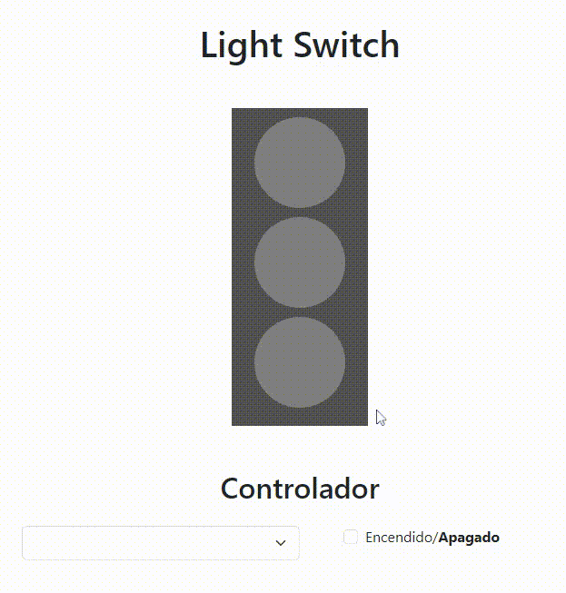
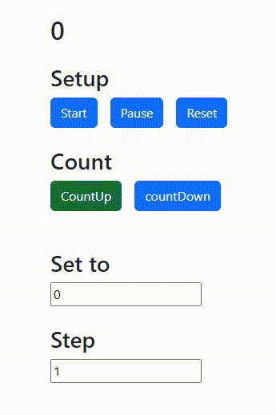

En el "component communication" los tres métodos de comunicación deben ser
totalmente independentes: quiero con esto decir que si en tu html tienes
algo como:
<app-child [message]="messageToChild"></app-child>
Al remover el input 'message'
<app-child></app-child>
El único método que debería dejar de funcionar sería el de "comunicación por
input", los demás 2 deberían seguir funcionando y también ellos deberían ser
independientes uno del otro. Esto porque queremos que sepáis cómo hacer
comunicación de distintas maneras y en qué casos una es mejor que la otra.
En el ejercicio de del semáforo se espera que tengáis un componente padre y 2 componentes hijo "TraficLightComponent" y "ControllerComponent" para que podáis practicar la comunicación desde dos componentes distintos en que uno emite eventos y el otro pueda reaccionar a ellos (idealmente usar observables).
Crea dos gráficas usando datos de una API pública y una librería de tu elección.

Intenta implementar toda la funcionalidad exclusivamente usando RxJs.
